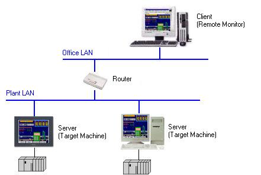
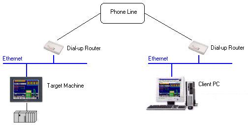
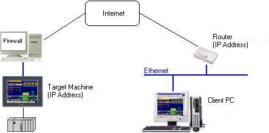

|
|
|
|
|
|
|
|
Web Gate supports the types of connections listed below.
If your plant and office are connected to separate LANs, you can access a target machine with the remote PC using a router.

Connect through a dial-up router:

Connecting through the Internet:
With Web Gate's web server capability, you can set a IP address for the target and allow a remote PC to access the target via the Internet.


Web Gate uses an HTTP port and a data-sharing port. See Section 4.5.1, Target Properties for more information on the ports.
If the target machine and the client PC use a firewall, change the firewall settings in order to use both the HTTP and the data-sharing ports.
Web Gate does not work via a proxy server. To use Web Gate, either do not use a proxy server, or configure Port Forwarding on the proxy server with the target machine address.
Web Gate does not work with GPRS Routers (based on GSM-based technology).